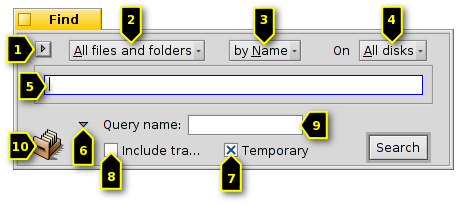
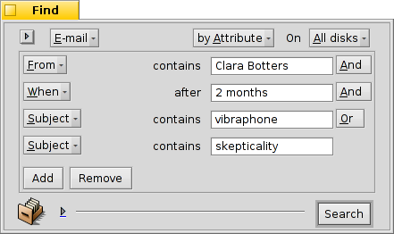

Português (Brazil)
Português (Brazil) Català
Català Deutsch
Deutsch English
English Español
Español Français
Français Italiano
Italiano Magyar
Magyar Polski
Polski Português
Português Română
Română Slovenčina
Slovenčina Suomi
Suomi Svenska
Svenska 中文 ［中文］
中文 ［中文］ Русский
Русский Українська
Українська 日本語
日本語| Índice |
|
A janela Encontrar Consultas básicas - "por Nome" Consultas avançadas - "por Atributo" Consultas ainda mais avançadas - "por Fórmula" A janela de resultado Modelos de Consulta |
Consultas
Uma consulta é uma pesquisa de arquivos baseada em atributos e pode ser realizada dentro do Rastreador ou no Terminal. As consultas são salvas em /boot/home/queries/ e por padrão após sete dias são eliminadas. Note que estas não listas estáticas resultantes de sua pesquisa, mas são as fórmulas de consulta que ativam uma nova pesquisa toda vez que abertas.
Ainda melhor, não é preciso duplo clique para refazer uma consulta. Pode-se aprofundar uma consulta salva assim como qualquer pasta com o clique do botão direito do mouse sobre ela e navegar através dos submenus.
 A janela Encontrar
A janela Encontrar
Inicia-se uma consulta acionando o menu também a partir do menu da Deskbar ou de qualquer janela do Rastreador ou da Área de Trabalho (que na realidade é uma janela em tela cheia do Rastreador). As teclas de atalho são ALT F. Será mostrada a janela Encontrar:
Seleciona consultas recentes ou salvas ou salva os parâmetros da pesquisa atual como Modelo de Consulta.
Afina sua pesquisa a partir de para tipos de arquivo específicos.
- Define o método de pesquisa:
- - uma pesquisa básica por nome de arquivo ou pasta
- - uma pesquisa avançada, especificando termos de pesquisa para um ou mais atributos
- - uma pesquisa ainda mais avançada, pode-se fazer uma sintonia fina de um termo de pesquisa complexo
Seleciona que dispositivos pesquisar.
Insere o termo de pesquisa.
O expansor oculta/exibe as opções adicionais.
Desmarque a caixa de verificação se não quiser que esta consulta se auto-destrua após 7 dias.
Marque se sua pesquisa pretende .
Opcionalmente, insira um nome para esta pesquisa se deseja salvá-la.
Pode-se arrastar e soltar o ícone em qualquer lugar para salvar uma consulta. Fazer isso com o botão direito do mouse, oferece a opção de salvar como modelo.
Consultas básicas - "por Nome"
Se simplesmente deseja encontrar todos os arquivos e pastas em seus discos montados que atendem a certo padrão, simplesmente deixe o método de pesquisa em , insira o termo de pesquisa dentro da caixa de texto e pressione ENTER.
Consultas avançadas - "por Atributo"
Pode-se criar consultas mais avançadas pela pesquisa dentro dos atributos de tipos específicos de arquivo. Para que funcione, estes atributos tem que estar indexados.

Comece por definir o tipo de arquivo a partir de para, por exemplo, e altere o método de pesquisa para .
Isto adiciona um menu pop-up à esquerda da caixa de texto e os botões e abaixo dele. A partir do menu escolha qual atributo pesquisar. Com e pode-se consultar atributos adicionais ou removê-los novamente. Estes atributos podem ser logicamente vinculados com E/OU.
Façamos uma consulta de correio eletrônico como um exemplo:
Esta é sua janela Encontrar quando está procurando por todas as mensagens que Clara Botters enviou a você nos últimos dois meses com o assunto "vibraphone" ou "skepticality".
Como pode ver, procurar através de atributos baseados em tempo suporta algumas frases úteis: além de "últimos 2 meses", poderia também utilizar "hoje", "ontem", "Segunda-feira" ou "última Segunda-feira" (o que seria a Segunda-feira da semana passada), ou "últimos 2 minutos/horas/dias/semanas".
Uma boa maneira de reduzir o número de resultados de pesquisa.
Consutlas ainda mais avançadas - "por Fórmula"
Digitar em uma consulta por fórmula à mão é assustador e realmente muito pouco prático. Mas tem seus usos.
Tome a consulta por atributo das mensagens de Clara sobre vibrafones acima. Se possui todos os atributos e seus termos de busca definidos, tente alterar para o modo mode e seja oprimido por esta sequência de consulta em uma linha:

Mais uma vez como texto, editado para maior legibilidade:
(((((MAIL:from=="*[cC][lL][aA][rR][aA] [bB][oO][tT][tT][eE][rR][sS]*")
&&(MAIL:when>=%2 months%))
&&(MAIL:subject=="*[vV][iI][bB][rR][aA][pP][hH][oO][nN][eE]*"))
||(MAIL:subject=="*[sS][kK][eE][pP][tT][iI][cC][aA][lL][iI][tT][yY]*"))
&&(BEOS:TYPE=="text/x-email"))
Qual é a utilidade?
Poderia copiar e colar a sequência dentro de uma mensagem de correio, forum ou IRC para outros utilizarem ou depurarem.
Pode-se utilizar este método para construir uma consulta no modo e então alternar para o modo , para confortavelmente gerar uma sequência de pesquisa para uso numa consulta no Terminal ou num script.
Pode-se realizar uma sintonia fina de sua consulta ao inserir parêntesis onde necessário, fazer partes diferenciarem maiúsculas de minúsculas ou negar combinações lógicas por mudança. Por exemplo, "==" para "!=" para um NÃO E. Tudo o que precisa é um entendimento básico de expressões regulares e talvez alguma base de scripting.
A janela de resultado
Após iniciar uma pesquisa, a janela Encontrar será substituída por uma janela de resultado. Aqui está um exemplo que consultou por "servidor":

Além do fundo cinzaa janela de resultado funciona exatamente como qualquer outra janela do Rastreador. Algumas coisas são dignas de nota:
Pode-se abrir a localização de um arquivo ou pasta pelo clique duplo no seu atributo de caminho.
Com ou ALT G pode-se voltar para a janela Encontrar para refinar a consulta.
Uma consulta é viva, ou seja, se um arquivo que atende a seus critérios de pesquisa aparece ou desaparece de seu sistema, esta mudança é refletida nos seus resultados em tempo real.
Pode-se atribuir uma disposição de atributo sensível para resultados de consultas de um tipo de arquivo específico. Abra uma pasta contendo arquivos do tipo de arquivo para o qualque gostaria de criar um modelo e organize os atributos como gostaria de ter os resultados da consulta apresentados. Copie esta disposição com .
Abra /boot/home/config/settings/Tracker/DefaultQueryTemplates, crie uma nova pasta chamada grupo/tipo de arquivo, substituindo a barra com um sublinhado, por exemplo "audio_x-mp3". Abra a nova pasta e cole nela a disposição previamente copiada com .
Modelos de Consulta
Ao executar duplo clique numa consulta salva, a pesquisa de arquivo é iniciada e a janela de resultado abre imediatamente. Contudo, você pode não querer pesquisar com estes parâmetros de pesquisa exatos, mas utilizá-lo como ponto de partida para apenas ajustar levemente a fórmula.
Ao utilizar o item de menu (veja (1) na captura de tela no topo) ou arrastar e soltar o ícone (10) em qualquer lugar com o botão direito do mouse, pode-se criar o referido modelo. Um duplo clique nele não irá abrir uma janela de resultado, mas a janela de diálogo Encontrar, dando a oportunidade para rapidamente alterar as sequências de pesquisa ou adicionar/remover atributos.
Onde quer que escolha salvar modelos de consulta, eles serão listados no menu da janela de diálogo Encontrar de consultas recentes.